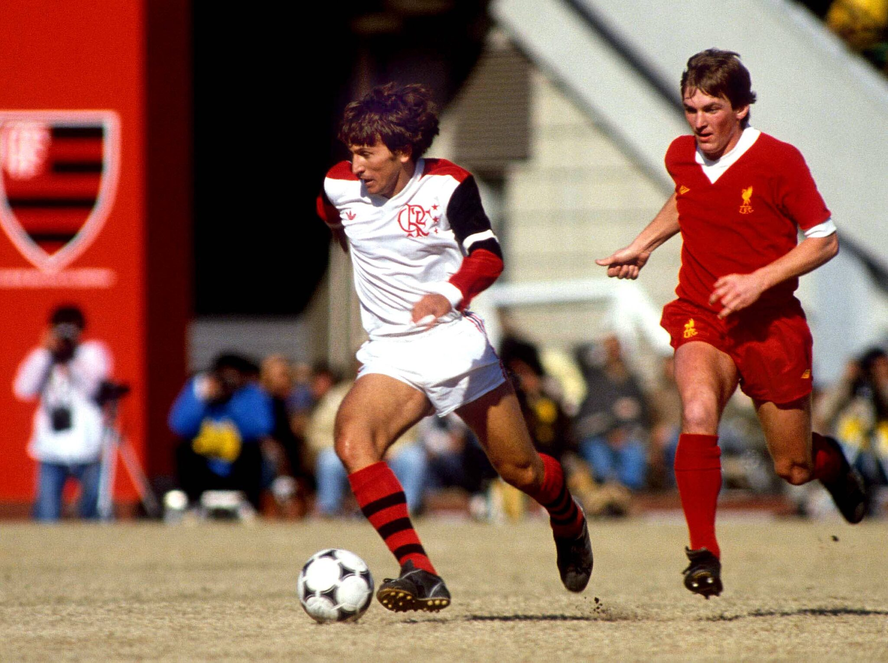

Ídolos do Flamengo
O Flamengo possui uma galeria de ídolos que marcaram época no futebol brasileiro.
Zico, o maior de todos, é conhecido como o Galinho de Quintino e símbolo do clube.
Júnior, Leandro, Adílio e Andrade também marcaram a geração campeã dos anos 80.
Romário e Petkovic brilharam no início dos anos 2000 com grandes conquistas.
Em 2019, Gabigol entrou para a história ao marcar dois gols na final da Libertadores.
Bruno Henrique, Arrascaeta, Diego Alves e Filipe Luís também fazem parte dessa era recente.
Everton Ribeiro foi capitão e símbolo de liderança em campo.
Paulo César Carpegiani foi campeão como jogador e técnico.
Nunes, conhecido como o Artilheiro das Decisões, marcou época nos anos 80.
Esses jogadores representam a alma rubro-negra e a paixão de milhões de torcedores.
